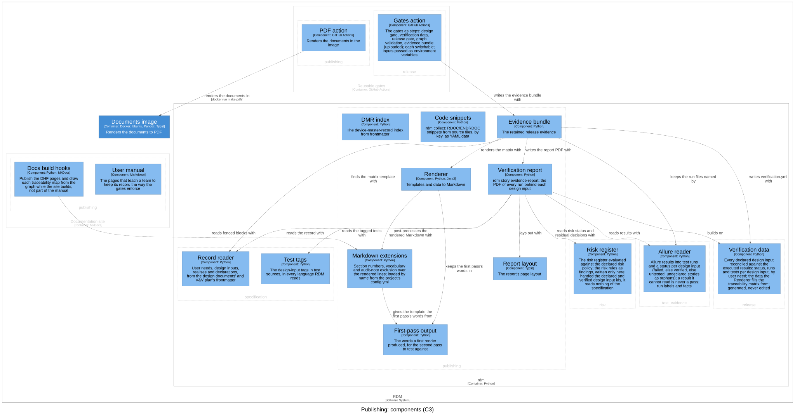
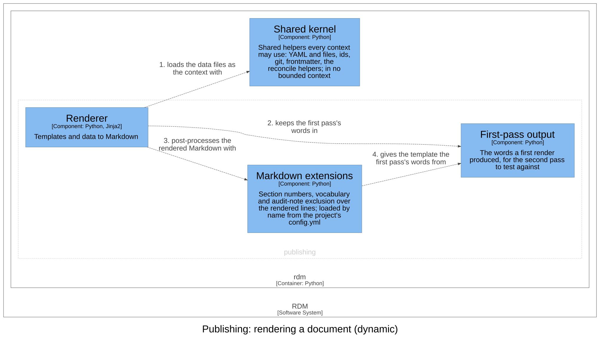

Publishing — Software Design¶
Id: SDS-REN-001 · Kind: design · Context: publishing · Realises: DI-1, DI-4, DI-30, DI-63 · Download as PDF
Design inputs¶
- DI-7 — RDM shall render a Markdown template file with Jinja2 against the data files supplied, each available under its file name, and refuse, naming it, a value the template uses that the data does not supply.
- Traces to: UN-001
- DI-8 — RDM shall provide the invert_dependencies, join_to, and md_indent template filters used to build traceability tables.
- Traces to: UN-001
- DI-9 — RDM shall post-process rendered Markdown: auto-number sections, give a template the words its first render produced by rendering it a second time, so a glossary lists only the terms the document uses, and exclude auditor-only notes from released output.
- Traces to: UN-001
- DI-16 — RDM shall extract delimited code snippets from source files (RDOC/ENDRDOC), keyed by name, for inclusion in documents.
- Traces to: UN-001
- DI-79 — RDM's user manual shall show each tagged-test example naming the C4 component it exercises by a component label.
- Traces to: UN-018
- DI-80 — RDM's instructions for use shall be one manual whose controlled document lists its pages in reading order: a cover naming the product, the release it is for (filled in by the build: the release tag it is built from, or the development version otherwise), and the manual's own id and revision; then what RDM is for (its intended use); how it works; limits and risks; install; quick start; guides (the operating instructions); troubleshooting; reference; and changelog (the revision history).
- Traces to: UN-018
- DI-82 — RDM's instructions for use shall be published once per release tag and once for the development version, every published release kept and selectable beside the others, the newest release being the default.
- Traces to: UN-018
- DI-81 — RDM's instructions for use shall disclose each risk of RDM's risk register by its id, with what the user must do about its residual risk.
- Traces to: UN-018, UN-016
- DI-29 — RDM shall generate device-master-record index data from controlled documents' frontmatter, writing one entry per document (id, title, path, revision) to a data file the DMR index renders from.
- Traces to: UN-012
- DI-64 — RDM shall render a verification report to PDF from the record and the Allure results it is given, for review by someone who did not run the tests: a header naming the repository, the record's commit, the commits tested, the executor and environment the results record, the RDM version and one SHA-256 over the result files; an evidence status that is release-grade only when every design input has a passing run, no run failed, and every run tested the record's commit with no uncommitted changes, and that otherwise names each reason; the anomalies (failed, broken or skipped runs, design inputs with no run, attachments not found, and tags naming no design input); a summary of the risk register's state; a traceability table of user need, design input, the risks it is a control for, its tests and their result; per design input, its text, context, user needs, outputs, whether it is a baseline or a risk-based acceptance criterion, and each risk it is a control for with that risk's status and residual decision, and for each run of a test tagged with it the test's file and function, its result, date and duration, its commit and worktree state where they differ from the header, any failure message and trace, its labels other than those the report already shows, its links, each step as a verification step with its own result, and the attachments the test made (text inline up to a limit, images embedded, any other file named with its SHA-256), with captured output and the copy of the requirement listed by name and SHA-256 only, and the Allure severity label left out; and an appendix listing every result file with its SHA-256. An unreadable result file or uncommitted changes to the record is a reason the evidence is not release-grade; text from the results is set as text, never markup; a symbolic link in the results is never read; and with no Typst available the report says so.
- Traces to: UN-012
Purpose¶
Publishing renders the design record into controlled documents: a template (a controlled document's source, with placeholders) filled with data generated from the record, then post-processed Markdown, and from it PDF and DOCX. It owns the template engine and its filters, the Markdown post-processing, the code snippets a document embeds, the device-master-record (DMR) index data, the verification report and the evidence bundle. Its language is template, data, rendered document and evidence bundle; a rendered document is output, never source. It is a read model: it reads the record through the contexts below it, never changes it, and nothing it renders is fed back into it.
Design Outputs¶
The design outputs are this context's architecture, in the C4 model of the architecture workspace: its components, what each is responsible for, and how they relate. They name components, never source code: the workspace maps each component to its code.

| Component | Responsibility | Meets |
|---|---|---|
| Renderer | Fills a template with the data files as its context, each under its file name, in one or two passes, and post-processes the result; refuses a value the data does not supply, and join_to an id its table lacks |
DI-7, DI-8 |
| Markdown extensions | Number the sections, give the template the vocabulary the document uses, and remove auditor-only notes | DI-9 |
| First-pass output | Holds the words a first render produced, for the second pass to test against | DI-9 |
| Code snippets | Collects the delimited snippets of source files, by key, as a data file, refusing a key used twice, in one file or two | DI-16 |
| DMR index | Writes one index entry per controlled document from its frontmatter | DI-29 |
| Verification report | Builds the report's data from the record and the results it is given, and has it laid out as a PDF | DI-64 |
| Report layout | Sets the report's pages, every value as text | DI-64 |
| Evidence bundle | Writes the retained release evidence, the verification report among it, and, given the unit tests' coverage report, carries it as verify does and keeps it; refuses a record with no matrix template before writing anything | DI-64; realises DI-30 |
| PDF action | Renders a repository's documents in the RDM image of the release it is pinned to | realises part of DI-63 |
| User manual | The instructions for use (IFU): the documentation site's pages (docs/), listed by the controlled document IFU-001 (dhf/documents/user_manual.md) and so in the DMR index; each tagged-test example names its component by key; chapters in the order of an IFU, a cover naming its release and revision, and each residual risk disclosed |
DI-79, DI-80, DI-81, DI-82 |
| Docs build hooks | Publish the DHF pages and draw each traceability map from the graph while the site builds; not part of the manual | — |
The PDF action is in the Reusable gates container; the others are in rdm.
The rules a reviewer needs to judge the design:
- Rendering. A placeholder with no data fails the render rather than rendering empty, with a message naming it (exit 2), as does a template that does not exist; an empty configuration loads no extensions. Each data file is one entry of the template's context, named by the file's name without its extension; two data files with one name are an error. Only when a template asks for the first pass's output is it rendered a second time with that output available; otherwise one pass is the whole render. The filters that build traceability tables are always available to a template.
- Post-processing. The project's configuration names the Markdown
extensions to load, and each runs over the rendered lines in turn. Section
numbering prefixes each heading with its number. The vocabulary extension
gives the template the words of the first pass, so a glossary or acronym
list includes only the terms the document uses. Audit-note exclusion
removes each
[[…]]note, and the space before it, from the output; a note may run over several lines of one paragraph, and one left open at the paragraph's end is kept as text. Neither extension touches code: fenced blocks (`` or ~~~, also inside a blockquote or a list item) and inline code are left as written, and only an ATX heading (#to######, then a space) is numbered. A project laid down byrdm init` enables only the vocabulary extension. - Snippets. A snippet runs from its opening marker to the closing marker in the same column (each a whole word, never part of a longer one), its lines kept from that column. An empty or repeated key in one file, a closing marker in another column, or a missing closing marker is refused, naming the file and line. The snippets are a data file the Renderer reads like any other.
- DMR index. One entry per Markdown document in the given directory with a frontmatter id (a blank one is none), sorted by id, marked as generated. A document with no id is skipped with a warning; a directory with no controlled document is an error.
- Verification report. The status of each design input is the release context's verification data; the report never decides it again. The evidence is release-grade only when no reason is found, and each reason is named: a design input not verified; a result file that cannot be read; a test that failed or broke; a test run with uncommitted changes, or with no commit; runs of another commit than the record's; a record with uncommitted changes; or a record whose commit is unknown. Every run counts, tagged with a declared input or not. The anomalies are a design input with no run, a run that did not pass, an unreadable result file, a missing attachment and an orphan tag. With no Typst available the report is refused, and the command says so, rather than written without its layout. Because the layout sets every value as text, never markup, nothing a test printed can change the document.
- Evidence bundle. It holds the verification data, the rendered traceability matrix (when the record has its template), every plain file of the results directory (the results, their attachments, the run's executor and environment; never a symbolic link or anything outside it), so the report's digest over them can be checked after CI's retention ends, the verification report or the reason it was not rendered, and a manifest of the counts, the files this bundle wrote, and each attachment a result names that is missing. A bundle written where one was before replaces the earlier results, never mixes them, and an output that would hold the results directory, or sit inside it, is refused. Neither the bundle nor the report reads a symbolic link in the results directory. It lives here because it renders: the matrix with the Renderer, the report with the Verification report.
The relationships that matter, in the direction of the arrow:
- The Renderer keeps the first pass's words in the First-pass output and post-processes the rendered Markdown with the Markdown extensions, which give the template the first pass's words from the First-pass output.
- The Verification report builds on the Verification data (release), reads results with the Allure reader (test evidence), reads the record with the record reader and reads the tagged tests with the test tags (specification), reads risk status and residual decisions with the Risk register (risk), and lays out with the Report layout.
- The DMR index takes each document's frontmatter from the shared kernel.
- The Evidence bundle writes verification.yml with the Verification data (release), finds the matrix template with the record reader (specification), renders the matrix with the Renderer and writes the report PDF with the Verification report.
- The Gates action (release) writes the evidence bundle with the Evidence bundle: the one arrow into publishing from another context.
- The PDF action renders the documents in the Documents image.
Realised here: the rendering side of DI-1 (specification) — the needs and design inputs read from frontmatter are what the documents render — and of DI-4 (release) — the traceability matrix is the Renderer filling its template with the verification data; DI-30 (release), by the Evidence bundle; and the part of DI-63 (release) that renders the documents with the image of the same revision, by the PDF action.
Realised elsewhere: of DI-64's last clause, the reusable gates workflow
(release) includes the report by having the Gates action write the evidence
bundle. The project build that runs Pandoc and Typst over the rendered
Markdown is a template the specification's rdm init lays down.
Assumptions and open questions:
- The PDF action realises part of DI-63, but the frontmatter's
realisesdoes not list it. - A snippet key repeated across two files is not an error: the later file's snippet silently replaces the earlier one.
- The DMR index reads only the documents directly in the given directory, not those in its subdirectories (such as the design documents).
Dynamic view¶
The two passes of a render: the Renderer loads the data files as the template's context, keeps the words of the first pass, and post-processes the Markdown with the extensions, which give the second pass the first pass's words (so a glossary includes only the terms a document uses).

Commands and events¶
Each row: the actor issues the command, resulting in its success event or a fail event (the rule broken, after the slash), which affects the entity.
| Actor | Command | Success event | Fail events | Entity |
|---|---|---|---|---|
| CI | Build evidence bundle | Evidence Bundle Built | Not Built / Results Missing | Evidence bundle |
| CI | Write verification report | Report Written | Not Written / Typst Missing | Verification report |
Everything this context writes is a read model.
Dependencies¶
Layer 5 of the dependency rule, a read model: it depends on every context it
publishes from — release (the verification data), test_evidence (the
Allure reader), specification (the record reader and test tags), risk
(the risk register) — and the shared kernel. Within the code, nothing
depends on it but the composition root; in the architecture, the release
context's Gates action calls the Evidence bundle from the Reusable gates
container, as a command, not an import. No dependency breaks the rule.